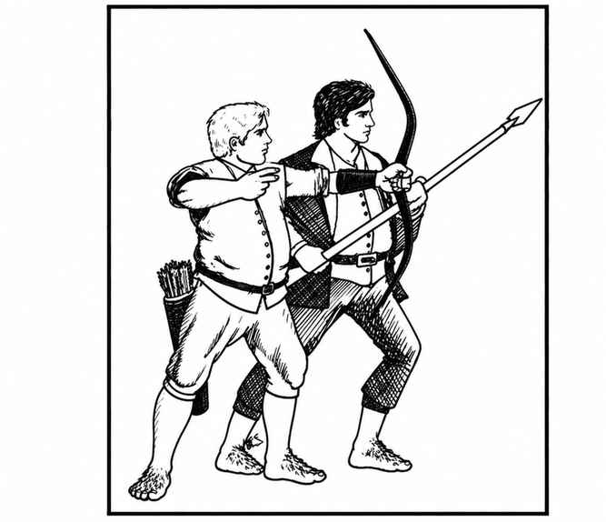

半身人 · Halfling
 |
|
\* 特殊个体可能拥有灵能能力。
半身人勤劳、有秩序、爱好和平，生活在类似人类的社区；他们的村落除地面小屋外，通常还有许多地穴住宅。每遇到 30 名半身人，就有两名 2 级战士。若人数超过 90，还会有一名 3 级战士首领；超过 150 时，另有一名 4 级、两名 3 级及三名 2 级战士。若在巢穴中遭遇，雌性数量相当于成年雄性的 100%，幼儿为 60%。半身人的巢穴通常位于田园乡野。
半身人通常穿衬垫甲或皮甲，武器配置如下：
| 武器组合 | 概率 |
|---|---|
| 小剑与短弓 | 10% |
| 小剑与矛 | 10% |
| 短弓 | 10% |
| 投石索 | 20% |
| 小剑 | 10% |
| 矛 | 20% |
| 手斧 | 20% |
高于普通等级的半身人护甲等级为 6；3 级与 4 级分别为 5 与 4。高等级半身人每级有 10% 概率拥有魔法护甲和／或杂项魔法武器。若在巢穴遇到半身人，每人身边有 1–4 条狗（数据按野狗计算）。
半身人对魔法与毒素的抗性使他们进行豁免时视为高于实际等级 4 级。他们擅长静默移动与藏匿；遭遇骰为 1–4（六面骰）时会突袭对手。在自然环境中，只要有植被可供藏身，就必须把他们视为隐形。他们没有红外视觉，而且畏惧水。
半身人会说自己的语言、阵营语与通用语，还会侏儒语、地精语和兽人语。
外观。 半身人肤色红润，头发多为棕色或沙棕色，眼睛棕色或榛色。衣着通常色彩鲜明，但裤子与外套多以灰、黄褐或棕色耐用布料制成。半身人预期寿命至少 150 年。
高个半身人 Tallfellow。 这类半身人身材更高（4 尺以上）、较为纤瘦，肤色与发色也较浅，极为罕见。他们使用更多护甲（护甲等级 6）、骑乘矮种马、更多携带长矛。力量特别高（17、18）的高个半身人，战士等级可达 5 或 6 级。他们会说精灵语，与精灵非常友好，平均寿命约 180 年。
敦实半身人 Stout。 这类半身人比普通（毛脚）半身人略矮（约 3 尺半以上），体格更壮。他们也穿更多护甲（护甲等级 6），除常见半身人武器外还使用钉头锤。力量特别高（18）的敦实半身人，战士等级可达 5 级。他们有红外视觉，能察觉倾斜通道；不怕水，也会游泳。他们会说矮人语，喜欢与矮人交往，寿命至少 200 年。